Toilets4London will be a mobile app to help people out and about in London easily find toilets. By working with local authorities, parks and public transport, Toilets4London will collect accurate data about publicly accessible toilets in London and display it in an easy to use way.


In addition, Toilets4London will lead a city-wide scheme encouraging businesses such as pubs and restaurants to let the public use their toilets.
By highlighting the importance of this issue and championing hygiene through in-app hygiene ratings and fun "toilet of the month" competitions, Toilets4London will strive to break the stigma around toilets and make London a more open, hygienic and accessible city.

By displaying important information such as opening hours and availability of baby change facilities, Toilets4London will help you feel confident when out and about.

Toilets4London will make it easy for toilet owners who require additional funding to maintain the facilities to charge a small access fee through the app. Our aim is to enable people to access cleaner and more numerous toilets across the city.

Toilets4London won the 2020 Mayor's Entrepreneur Smart Cities Award. Please reach out if you would like to learn more or get involved.